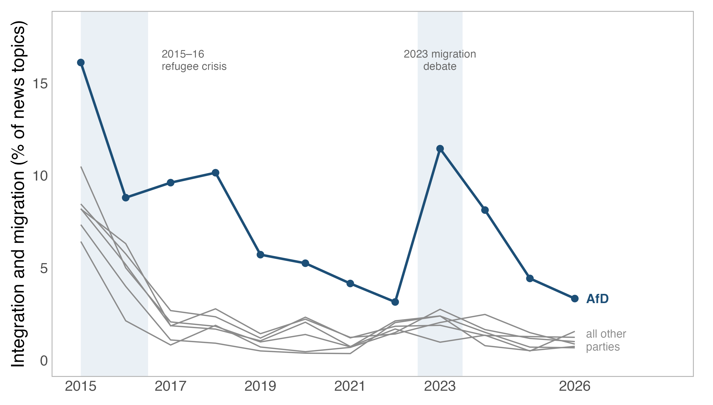

Local party organizations publish substantial amounts of material on their websites, but there is no systematic historical record of this material. Websites differ across chapters, and older content is frequently removed. CLARA uses Internet Archive snapshots to construct an annual panel of local party websites. It covers 2,635 local chapters of the seven main German parties annually from 2015 to 2025, or 28,985 chapter-years. The unit is the Kreisverband, the county-level association maintained by each party.
How the data were built
Each chapter's website is reconstructed separately for each year using Internet Archive snapshots. The underlying archive contains about 1.03 million pages. A locally hosted open-weight language model processes the pages and extracts the structured variables. Commercial models were not used to produce the released data. News pages are deduplicated to one record per article. The resulting file contains 237,399 articles dated between 2015 and 2025, with classifications for policy topic, article function, and geographic focus. The data report documents the sampling frame, website discovery, and extraction procedure.
What the data measure
- Organizational presence: whether a board, officials, issue content, and a local office address are listed.
- Board composition: size, gender shares inferred from first names, whether a chair is listed, and proxies for professionalization.
- Issue emphasis: 25 topic families, mapped to the Comparative Agendas Project scheme, to facilitate comparison with other agenda-coded data.
- Digital presence: the chapter's own accounts on six social platforms, with national party accounts excluded.
- Mobilization infrastructure: whether the site offers a donation, membership, newsletter, program, events, or volunteer pathway.
- News content: article counts and shares by topic, function, and geographic focus.
Coverage and limitations
Coverage is uneven and nonrandom. Of the 25,509 chapter-years in the recommended analysis scope, 17,989 are researcher-usable. Roughly one quarter have no Internet Archive snapshot from the relevant year. These observations cannot be recovered because the site was not archived. The dataset records the available source material for every chapter-year, and these variables can be used to define alternative coverage requirements. Conditional on an archived page of the relevant type being available, extraction almost always succeeds.

There are two additional sources of selection. First, a chapter had to have an active website in early 2026 to enter the roster. Chapters whose websites disappeared before then are therefore missing entirely, particularly in the earlier years. Second, a website had to be captured by the Internet Archive in a given year to be observed in that year. News counts consequently depend both on posting activity and on archive frequency. For this reason, comparisons across chapters and multi-year averages are more reliable than annual within-chapter changes. The codebook identifies the variables used to define coverage.
Validation
A human coder compared extracted records with their source pages in five stratified samples. In the sample drawn from released records, 45 of 48 records were confirmed. A second open-weight model from a different model family separately evaluated a new sample against the source pages. The deposit reports the results of both checks.
Aggregate patterns provide an additional check. The classifier does not receive the year as an input, but the share of articles classified as election campaigning increases in election years.

Topic classifications also vary with major events. Migration, climate, health, and energy receive their highest or near-highest levels of attention during the refugee crisis, the climate protests, the COVID-19 pandemic, and the energy crisis, respectively.

Party differences are also visible in the topic classifications. In every year from 2015 to 2025, migration accounts for a larger share of AfD news topics than of any other party's news topics.

Data and documentation
The deposit contains the chapter-year panel and its enriched version, the chapter roster, long-format topic and news files, a per-row provenance file, and crosswalks to the Comparative Agendas scheme and to Bundestag electoral districts, along with the codebook, the data report, coverage diagnostics, validation summaries, and minimal R and Python load scripts. The core panel is mirrored here as chapter_year_panel.csv (13 MB), but the Harvard Dataverse deposit is the citable version.
Person-level records and reproduced page text are not part of the release: the records are personal data under the GDPR, and the parties wrote the text, which may be under copyright. A controlled-access version of this material is in preparation. Data and documentation are CC-BY-4.0, and the pipeline code is available from the author on request.
Citation
Hilbig, Hanno (2026). CLARA: Communication of Local German Party Associations, Recorded Annually (2015-2025). Version 1.0.0. Harvard Dataverse. https://doi.org/10.7910/DVN/2KJSCO